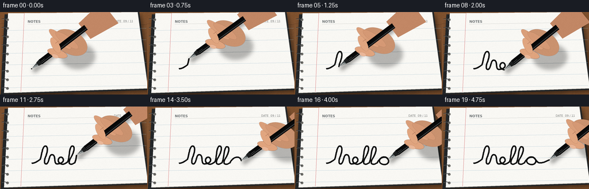
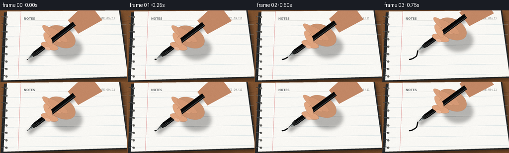

CODING AGENTS AS PIXEL WORLD MODELS
traex/GPT-5.6-Sol · phygen_035
点击播放 · 原生 RGB 像素
逐轮保存的候选
回放视频、检查图与代码变化。
每份候选均可单独播放。实际图片检查记录在下方工具轨迹中。
候选 01播放与检查图
点击播放 · 原生 RGB 像素


展开代码变化
--- 上一保存版本
+++ 本次保存版本
@@ -0,0 +1,199 @@
+from pathlib import Path
+import math
+import numpy as np
+from PIL import Image, ImageDraw, ImageFilter, ImageFont
+import artifact_io
+
+W,H,N,SS = 256,144,20,4
+rng=np.random.default_rng(3501)
+
+# Smooth vector-script trajectory for the word "hello".
+def bez(p0,p1,p2,p3,n=24):
+ t=np.linspace(0,1,n,endpoint=False)[:,None]
+ p0,p1,p2,p3=map(lambda p:np.array(p,float), (p0,p1,p2,p3))
+ return (1-t)**3*p0+3*(1-t)**2*t*p1+3*(1-t)*t*t*p2+t**3*p3
+segs=[
+ ((55,99),(60,99),(65,96),(70,92)), # entry
+ ((70,92),(73,85),(73,72),(78,69)), # h up
+ ((78,69),(84,68),(83,79),(79,88)), # h loop
+ ((79,88),(76,96),(77,101),(81,100)),
+ ((81,100),(86,98),(85,83),(91,84)), # h shoulder
+ ((91,84),(98,85),(92,101),(100,100)),
+ ((100,100),(107,100),(113,95),(109,90)), # e loop
+ ((109,90),(104,85),(98,94),(103,98)),
+ ((103,98),(108,103),(114,100),(118,96)),
+ ((118,96),(121,90),(120,72),(125,69)), # first l
+ ((125,69),(132,68),(128,82),(122,91)),
+ ((122,91),(117,101),(123,103),(130,98)),
+ ((130,98),(134,91),(133,73),(138,70)), # second l
+ ((138,70),(145,70),(141,83),(135,92)),
+ ((135,92),(130,101),(137,103),(144,98)),
+ ((144,98),(149,88),(158,86),(162,91)), # o
+ ((162,91),(167,99),(158,104),(151,100)),
+ ((151,100),(144,96),(149,87),(157,88)),
+ ((157,88),(163,89),(164,97),(169,98)), # exit flourish
+ ((169,98),(175,99),(181,96),(187,93)),
+]
+path=np.vstack([bez(*s, n=22) for s in segs]+[np.array([[187.,93.]])])
+d=np.sqrt(((path[1:]-path[:-1])**2).sum(1)); cum=np.r_[0,np.cumsum(d)]; total=cum[-1]
+
+def pos_at(frac):
+ q=np.clip(frac,0,1)*total
+ i=min(np.searchsorted(cum,q),len(path)-1)
+ if i==0:return path[0].copy(),0
+ a=(q-cum[i-1])/max(cum[i]-cum[i-1],1e-6)
+ p=path[i-1]*(1-a)+path[i]*a
+ return p,i
+
+def poly(draw, pts, fill): draw.polygon([(int(x*SS),int(y*SS)) for x,y in pts], fill=fill)
+def line(draw, pts, fill, width, joint='curve'):
+ draw.line([(int(x*SS),int(y*SS)) for x,y in pts], fill=fill, width=max(1,int(width*SS)), joint=joint)
+def ellipse(draw, box, fill, outline=None, width=1):
+ draw.ellipse(tuple(int(v*SS) for v in box),fill=fill,outline=outline,width=max(1,int(width*SS)))
+
+def capsule_layer(a,b,r,color):
+ im=Image.new('RGBA',(W*SS,H*SS),(0,0,0,0)); dr=ImageDraw.Draw(im)
+ line(dr,[a,b],color,2*r)
+ ellipse(dr,[a[0]-r,a[1]-r,a[0]+r,a[1]+r],color)
+ ellipse(dr,[b[0]-r,b[1]-r,b[0]+r,b[1]+r],color)
+ return im
+
+def draw_rot_ellipse(im, center, rx, ry, angle, fill, outline=None, ow=1):
+ # smooth ellipse on a local layer, then rotate
+ pad=int(max(rx,ry)*2*SS+8)
+ lay=Image.new('RGBA',(pad,pad),(0,0,0,0)); dr=ImageDraw.Draw(lay)
+ cx=cy=pad//2
+ dr.ellipse((cx-rx*SS,cy-ry*SS,cx+rx*SS,cy+ry*SS),fill=fill,outline=outline,width=max(1,int(ow*SS)))
+ lay=lay.rotate(angle,Image.Resampling.BICUBIC,expand=True)
+ im.alpha_composite(lay,(int(center[0]*SS-lay.width/2),int(center[1]*SS-lay.height/2)))
+
+# Fixed tactile paper/desk grain prevents temporal shimmer.
+wood_noise=rng.normal(0,1.5,(H,W,1))
+paper_noise=rng.normal(0,0.75,(H,W,1))
+frames=[]
+for fi in range(N):
+ # Mild ease-in/out, while leaving a clearly growing physical ink trace.
+ u=fi/(N-1)
+ frac=u*u*(3-2*u)
+ tip,idx=pos_at(frac)
+ prev_tip,_=pos_at(max(0,frac-.025))
+ # tiny natural hand tremor, zeroed at the beginning/end
+ trem=math.sin(fi*1.73)*0.32*math.sin(math.pi*u)
+ tip=tip+np.array([0,trem])
+
+ # Warm macro desk background with directional wood grain.
+ y,x=np.mgrid[0:H,0:W]
+ base=np.zeros((H,W,3),dtype=float)
+ grain=5*np.sin(x/17+0.25*np.sin(y/11))+2*np.sin(x/4.8+y/26)
+ vign=((x-W*.48)**2/(W*1.0)**2+(y-H*.44)**2/(H*.9)**2)*20
+ base[...,0]=133+grain-vign; base[...,1]=89+grain*.60-vign; base[...,2]=55+grain*.28-vign
+ base+=wood_noise
+ im=Image.fromarray(np.uint8(np.clip(base,0,255))).resize((W*SS,H*SS),Image.Resampling.BICUBIC).convert('RGBA')
+ dr=ImageDraw.Draw(im)
+ # soft wood seams
+ for yy in (20,132): line(dr,[(0,yy),(256,yy+2)],(89,55,35,90),.45)
+
+ # notebook cast shadow and dark charcoal cover under the paper
+ sh=Image.new('RGBA',im.size,(0,0,0,0)); sd=ImageDraw.Draw(sh)
+ poly(sd,[(8,8),(243,3),(264,137),(2,150)],(0,0,0,125))
+ sh=sh.filter(ImageFilter.GaussianBlur(4.2*SS)); im.alpha_composite(sh,(2*SS,2*SS))
+ poly(dr,[(8,4),(242,0),(260,136),(1,144)],(35,38,40,255))
+ poly(dr,[(14,2),(239,0),(257,133),(7,141)],(249,248,244,255))
+ # slight warmer page edge
+ line(dr,[(7,141),(257,133)],(195,190,181,255),1.2)
+ line(dr,[(239,0),(257,133)],(210,205,196,255),.7)
+
+ # Paper illumination and texture overlay, clipped approximately to page.
+ paper=Image.new('RGBA',im.size,(0,0,0,0)); pd=ImageDraw.Draw(paper)
+ poly(pd,[(14,2),(239,0),(257,133),(7,141)],(255,255,255,0))
+ # ruled notebook: understated blue-gray lines and red margin
+ for yy in [32,52,72,92,112,132]: line(dr,[(13,yy),(254,yy-4)],(148,181,198,78),.55)
+ line(dr,[(42,2),(36,139)],(215,120,120,95),.65)
+ # Header/date details create a believable notebook without distracting.
+ try:
+ fnt=ImageFont.truetype('/usr/share/fonts/truetype/dejavu/DejaVuSans.ttf',5*SS)
+ fntb=ImageFont.truetype('/usr/share/fonts/truetype/dejavu/DejaVuSans-Bold.ttf',6*SS)
+ dr.text((48*SS,13*SS),'NOTES',font=fntb,fill=(112,117,118,120))
+ dr.text((198*SS,13*SS),'DATE 09 / 11',font=fnt,fill=(130,132,130,100))
+ except Exception: pass
+ line(dr,[(48,21),(230,18)],(175,179,176,90),.4)
+
+ # Spiral binding holes and rings along the left edge.
+ for yy in range(13,137,15):
+ ellipse(dr,[10.5,yy-2,15.3,yy+2.5],(112,111,106,135))
+ # metal wire arc impression
+ line(dr,[(3,yy-1),(8,yy-2),(13,yy)],(45,48,50,220),1.05)
+ line(dr,[(3,yy),(8,yy-1),(13,yy+1)],(175,180,181,180),.45)
+
+ # Permanent ink already laid down. Slight under-edge gives liquid-black depth.
+ inkpts=[]
+ if idx>0:
+ inkpts=[tuple(p) for p in path[:idx]]+[tuple(tip)]
+ line(dr,inkpts,(20,21,20,90),2.55)
+ line(dr,inkpts,(13,14,14,255),1.65)
+ # occasional microscopic sheen on the newest wet section
+ if len(inkpts)>4: line(dr,inkpts[-5:],(55,57,55,170),.38)
+ # tiny pool of ink exactly at contact
+ ellipse(dr,[tip[0]-1.15,tip[1]-.75,tip[0]+1.15,tip[1]+.75],(9,10,10,245))
+
+ # Pen orientation, consistently slanting toward the writer at upper right.
+ theta=-.655 + .025*math.sin(fi*.55)
+ v=np.array([math.cos(theta),math.sin(theta)]) # nib -> tail
+ nrm=np.array([-v[1],v[0]])
+ grip=tip+v*54
+ tail=tip+v*119
+
+ # Pen/hand shadow follows their movement on the smooth page.
+ shadow=Image.new('RGBA',im.size,(0,0,0,0))
+ sdr=ImageDraw.Draw(shadow)
+ line(sdr,[tip+np.array([3,4]),tail+np.array([3,4])],(0,0,0,100),8)
+ ellipse(sdr,[grip[0]+7,grip[1]-12,grip[0]+68,grip[1]+34],(0,0,0,70))
+ shadow=shadow.filter(ImageFilter.GaussianBlur(3.4*SS)); im.alpha_composite(shadow)
+
+ # Back of hand and wrist (behind pen), entering naturally from upper-right.
+ palm_center=grip+v*28+nrm*5
+ draw_rot_ellipse(im,palm_center,31,20,math.degrees(theta)+8,(202,146,111,255),(151,100,75,180),.45)
+ wrist=palm_center+v*31-nrm*1
+ skin=Image.new('RGBA',im.size,(0,0,0,0)); sk=ImageDraw.Draw(skin)
+ poly(sk,[wrist+nrm*17,wrist-nrm*17,wrist+v*55-nrm*23,wrist+v*55+nrm*25],(194,135,101,255))
+ im.alpha_composite(skin)
+ # knuckle warmth and back fingers
+ draw_rot_ellipse(im,grip+v*17-nrm*11,25,7,math.degrees(theta)-4,(218,159,122,255),(153,101,77,180),.45)
+ draw_rot_ellipse(im,grip+v*25-nrm*2,24,7,math.degrees(theta)+2,(213,153,117,255),(153,101,77,160),.4)
+
+ # Metallic nib: tip at current endpoint, then glossy black pen barrel.
+ p0=tip; p1=tip+v*13
+ poly(dr,[p0,p1+nrm*3.3,p1-nrm*3.3],(139,145,145,255))
+ poly(dr,[p0,p1+nrm*.25,p1-nrm*2.8],(70,76,77,255))
+ line(dr,[tip+v*1,tip+v*10],(229,232,229,220),.5)
+ # collar and body, tapered near nib
+ poly(dr,[p1+nrm*3.4,p1+v*8+nrm*5.0,p1+v*8-nrm*5.0,p1-nrm*3.4],(29,31,31,255))
+ body_a=p1+v*7; body_b=tail
+ line(dr,[body_a,body_b],(9,10,11,255),10.2)
+ line(dr,[body_a+nrm*2.6,body_b+nrm*2.6],(65,68,69,220),1.25)
+ line(dr,[body_a-nrm*3.1,body_b-nrm*3.1],(0,0,0,220),1.4)
+ line(dr,[p1+v*8,p1+v*16],(105,108,106,210),.6)
+
+ # Foreground index finger and thumb curl around the pen barrel.
+ draw_rot_ellipse(im,grip-v*2+nrm*6.0,18,7.0,math.degrees(theta)+20,(224,164,126,255),(154,102,77,190),.5)
+ # index tip crossing barrel from upper side
+ draw_rot_ellipse(im,grip+v*4-nrm*7.0,15,6.3,math.degrees(theta)-24,(225,166,128,255),(155,103,77,180),.45)
+ # thumbnail with translucent highlight
+ nailc=grip-v*8+nrm*8
+ draw_rot_ellipse(im,nailc,6.2,3.2,math.degrees(theta)+18,(235,184,153,235),(182,124,97,160),.35)
+ # skin highlights/creases
+ fg=ImageDraw.Draw(im)
+ line(fg,[grip-v*12+nrm*8,grip-v*4+nrm*10],(246,193,158,175),.65)
+ line(fg,[grip+v*6-nrm*10,grip+v*13-nrm*10],(164,106,82,115),.5)
+
+ # downsample for clean photographic antialiasing, then fixed fine sensor grain.
+ out=im.convert('RGB').resize((W,H),Image.Resampling.LANCZOS)
+ arr=np.asarray(out).astype(np.int16)
+ # page-local static texture plus very subtle global film grain
+ pnoise=np.repeat(paper_noise,3,axis=2)
+ global_noise=rng.normal(0,.38,(H,W,1))
+ arr=np.clip(arr+pnoise+global_noise,0,255).astype(np.uint8)
+ frames.append(arr)
+
+frames=np.stack(frames)
+artifact_io.save(frames,Path(__file__).resolve().parent)
可观测工具轨迹
实际执行的命令与返回图片。
命令 1exit 0
/bin/bash -lc "cat prompt.txt && printf '\\n--- GENERATION_RULES.md ---\\n' && cat GENERATION_RULES.md && printf '\\n--- task_spec.json ---\\n' && cat task_spec.json"
命令 2exit 0
/bin/bash -lc "printf '%s\\n' '--- files ---'; find . -maxdepth 3 -type f -printf '%p\\n' | sort; printf '%s\\n' '--- tools ---'; command -v ffmpeg || true; command -v python3 || true; python3 - <<'PY' mods=['numpy','PIL','cv2','imageio','scipy','matplotlib','cairo','moderngl'] for m in mods: try: x=__import__(m); print(m,'OK',getattr(x,'__version__','')) except Exception as e: print(m,'NO',type(e).__name__) PY"
命令 3exit 0
/bin/bash -lc 'cat artifact_io.py'
命令 4exit 0
/bin/bash -lc 'fc-list | head -30 || true'
命令 5exit 0
/bin/bash -lc "cat > generate.py <<'PY'
from pathlib import Path
import math
import numpy as np
from PIL import Image, ImageDraw, ImageFilter, ImageFont
import artifact_io
W,H,N,SS = 256,144,20,4
rng=np.random.default_rng(3501)
# Smooth vector-script trajectory for the word \"hello\".
def bez(p0,p1,p2,p3,n=24):
t=np.linspace(0,1,n,endpoint=False)[:,None]
p0,p1,p2,p3=map(lambda p:np.array(p,float), (p0,p1,p2,p3))
return (1-t)**3*p0+3*(1-t)**2*t*p1+3*(1-t)*t*t*p2+t**3*p3
segs=[
((55,99),(60,99),(65,96),(70,92)), # entry
((70,92),(73,85),(73,72),(78,69)), # h up
((78,69),(84,68),(83,79),(79,88)), # h loop
((79,88),(76,96),(77,101),(81,100)),
((81,100),(86,98),(85,83),(91,84)), # h shoulder
((91,84),(98,85),(92,101),(100,100)),
((100,100),(107,100),(113,95),(109,90)), # e loop
((109,90),(104,85),(98,94),(103,98)),
((103,98),(108,103),(114,100),(118,96)),
((118,96),(121,90),(120,72),(125,69)), # first l
((125,69),(132,68),(128,82),(122,91)),
((122,91),(117,101),(123,103),(130,98)),
((130,98),(134,91),(133,73),(138,70)), # second l
((138,70),(145,70),(141,83),(135,92)),
((135,92),(130,101),(137,103),(144,98)),
((144,98),(149,88),(158,86),(162,91)), # o
((162,91),(167,99),(158,104),(151,100)),
((151,100),(144,96),(149,87),(157,88)),
((157,88),(163,89),(164,97),(169,98)), # exit flourish
((169,98),(175,99),(181,96),(187,93)),
]
path=np.vstack([bez(*s, n=22) for s in segs]+[np.array([[187.,93.]])])
d=np.sqrt(((path[1:]-path[:-1])**2).sum(1)); cum=np.r_[0,np.cumsum(d)]; total=cum[-1]
def pos_at(frac):
q=np.clip(frac,0,1)*total
i=min(np.searchsorted(cum,q),len(path)-1)
if i==0:return path[0].copy(),0
a=(q-cum[i-1])/max(cum[i]-cum[i-1],1e-6)
p=path[i-1]*(1-a)+path[i]*a
return p,i
def poly(draw, pts, fill): draw.polygon([(int(x*SS),int(y*SS)) for x,y in pts], fill=fill)
def line(draw, pts, fill, width, joint='curve'):
draw.line([(int(x*SS),int(y*SS)) for x,y in pts], fill=fill, width=max(1,int(width*SS)), joint=joint)
def ellipse(draw, box, fill, outline=None, width=1):
draw.ellipse(tuple(int(v*SS) for v in box),fill=fill,outline=outline,width=max(1,int(width*SS)))
def capsule_layer(a,b,r,color):
im=Image.new('RGBA',(W*SS,H*SS),(0,0,0,0)); dr=ImageDraw.Draw(im)
line(dr,[a,b],color,2*r)
ellipse(dr,[a[0]-r,a[1]-r,a[0]+r,a[1]+r],color)
ellipse(dr,[b[0]-r,b[1]-r,b[0]+r,b[1]+r],color)
return im
def draw_rot_ellipse(im, center, rx, ry, angle, fill, outline=None, ow=1):
# smooth ellipse on a local layer, then rotate
pad=int(max(rx,ry)*2*SS+8)
lay=Image.new('RGBA',(pad,pad),(0,0,0,0)); dr=ImageDraw.Draw(lay)
cx=cy=pad//2
dr.ellipse((cx-rx*SS,cy-ry*SS,cx+rx*SS,cy+ry*SS),fill=fill,outline=outline,width=max(1,int(ow*SS)))
lay=lay.rotate(angle,Image.Resampling.BICUBIC,expand=True)
im.alpha_composite(lay,(int(center[0]*SS-lay.width/2),int(center[1]*SS-lay.height/2)))
# Fixed tactile paper/desk grain prevents temporal shimmer.
wood_noise=rng.normal(0,1.5,(H,W,1))
paper_noise=rng.normal(0,0.75,(H,W,1))
frames=[]
for fi in range(N):
# Mild ease-in/out, while leaving a clearly growing physical ink trace.
u=fi/(N-1)
frac=u*u*(3-2*u)
tip,idx=pos_at(frac)
prev_tip,_=pos_at(max(0,frac-.025))
# tiny natural hand tremor, zeroed at the beginning/end
trem=math.sin(fi*1.73)*0.32*math.sin(math.pi*u)
tip=tip+np.array([0,trem])
# Warm macro desk background with directional wood grain.
y,x=np.mgrid[0:H,0:W]
base=np.zeros((H,W,3),dtype=float)
grain=5*np.sin(x/17+0.25*np.sin(y/11))+2*np.sin(x/4.8+y/26)
vign=((x-W*.48)**2/(W*1.0)**2+(y-H*.44)**2/(H*.9)**2)*20
base[...,0]=133+grain-vign; base[...,1]=89+grain*.60-vign; base[...,2]=55+grain*.28-vign
base+=wood_noise
im=Image.fromarray(np.uint8(np.clip(base,0,255))).resize((W*SS,H*SS),Image.Resampling.BICUBIC).convert('RGBA')
dr=ImageDraw.Draw(im)
# soft wood seams
for yy in (20,132): line(dr,[(0,yy),(256,yy+2)],(89,55,35,90),.45)
# notebook cast shadow and dark charcoal cover under the paper
sh=Image.new('RGBA',im.size,(0,0,0,0)); sd=ImageDraw.Draw(sh)
poly(sd,[(8,8),(243,3),(264,137),(2,150)],(0,0,0,125))
sh=sh.filter(ImageFilter.GaussianBlur(4.2*SS)); im.alpha_composite(sh,(2*SS,2*SS))
poly(dr,[(8,4),(242,0),(260,136),(1,144)],(35,38,40,255))
poly(dr,[(14,2),(239,0),(257,133),(7,141)],(249,248,244,255))
# slight warmer page edge
line(dr,[(7,141),(257,133)],(195,190,181,255),1.2)
line(dr,[(239,0),(257,133)],(210,205,196,255),.7)
# Paper illumination and texture overlay, clipped approximately to page.
paper=Image.new('RGBA',im.size,(0,0,0,0)); pd=ImageDraw.Draw(paper)
poly(pd,[(14,2),(239,0),(257,133),(7,141)],(255,255,255,0))
# ruled notebook: understated blue-gray lines and red margin
for yy in [32,52,72,92,112,132]: line(dr,[(13,yy),(254,yy-4)],(148,181,198,78),.55)
line(dr,[(42,2),(36,139)],(215,120,120,95),.65)
# Header/date details create a believable notebook without distracting.
try:
fnt=ImageFont.truetype('/usr/share/fonts/truetype/dejavu/DejaVuSans.ttf',5*SS)
fntb=ImageFont.truetype('/usr/share/fonts/truetype/dejavu/DejaVuSans-Bold.ttf',6*SS)
dr.text((48*SS,13*SS),'NOTES',font=fntb,fill=(112,117,118,120))
dr.text((198*SS,13*SS),'DATE 09 / 11',font=fnt,fill=(130,132,130,100))
except Exception: pass
line(dr,[(48,21),(230,18)],(175,179,176,90),.4)
# Spiral binding holes and rings along the left edge.
for yy in range(13,137,15):
ellipse(dr,[10.5,yy-2,15.3,yy+2.5],(112,111,106,135))
# metal wire arc impression
line(dr,[(3,yy-1),(8,yy-2),(13,yy)],(45,48,50,220),1.05)
line(dr,[(3,yy),(8,yy-1),(13,yy+1)],(175,180,181,180),.45)
# Permanent ink already laid down. Slight under-edge gives liquid-black depth.
inkpts=[]
if idx>0:
inkpts=[tuple(p) for p in path[:idx]]+[tuple(tip)]
line(dr,inkpts,(20,21,20,90),2.55)
line(dr,inkpts,(13,14,14,255),1.65)
# occasional microscopic sheen on the newest wet section
if len(inkpts)>4: line(dr,inkpts[-5:],(55,57,55,170),.38)
# tiny pool of ink exactly at contact
ellipse(dr,[tip[0]-1.15,tip[1]-.75,tip[0]+1.15,tip[1]+.75],(9,10,10,245))
# Pen orientation, consistently slanting toward the writer at upper right.
theta=-.655 + .025*math.sin(fi*.55)
v=np.array([math.cos(theta),math.sin(theta)]) # nib -> tail
nrm=np.array([-v[1],v[0]])
grip=tip+v*54
tail=tip+v*119
# Pen/hand shadow follows their movement on the smooth page.
shadow=Image.new('RGBA',im.size,(0,0,0,0))
sdr=ImageDraw.Draw(shadow)
line(sdr,[tip+np.array([3,4]),tail+np.array([3,4])],(0,0,0,100),8)
ellipse(sdr,[grip[0]+7,grip[1]-12,grip[0]+68,grip[1]+34],(0,0,0,70))
shadow=shadow.filter(ImageFilter.GaussianBlur(3.4*SS)); im.alpha_composite(shadow)
# Back of hand and wrist (behind pen), entering naturally from upper-right.
palm_center=grip+v*28+nrm*5
draw_rot_ellipse(im,palm_center,31,20,math.degrees(theta)+8,(202,146,111,255),(151,100,75,180),.45)
wrist=palm_center+v*31-nrm*1
skin=Image.new('RGBA',im.size,(0,0,0,0)); sk=ImageDraw.Draw(skin)
poly(sk,[wrist+nrm*17,wrist-nrm*17,wrist+v*55-nrm*23,wrist+v*55+nrm*25],(194,135,101,255))
im.alpha_composite(skin)
# knuckle warmth and back fingers
draw_rot_ellipse(im,grip+v*17-nrm*11,25,7,math.degrees(theta)-4,(218,159,122,255),(153,101,77,180),.45)
draw_rot_ellipse(im,grip+v*25-nrm*2,24,7,math.degrees(theta)+2,(213,153,117,255),(153,101,77,160),.4)
# Metallic nib: tip at current endpoint, then glossy black pen barrel.
p0=tip; p1=tip+v*13
poly(dr,[p0,p1+nrm*3.3,p1-nrm*3.3],(139,145,145,255))
poly(dr,[p0,p1+nrm*.25,p1-nrm*2.8],(70,76,77,255))
line(dr,[tip+v*1,tip+v*10],(229,232,229,220),.5)
# collar and body, tapered near nib
poly(dr,[p1+nrm*3.4,p1+v*8+nrm*5.0,p1+v*8-nrm*5.0,p1-nrm*3.4],(29,31,31,255))
body_a=p1+v*7; body_b=tail
line(dr,[body_a,body_b],(9,10,11,255),10.2)
line(dr,[body_a+nrm*2.6,body_b+nrm*2.6],(65,68,69,220),1.25)
line(dr,[body_a-nrm*3.1,body_b-nrm*3.1],(0,0,0,220),1.4)
line(dr,[p1+v*8,p1+v*16],(105,108,106,210),.6)
# Foreground index finger and thumb curl around the pen barrel.
draw_rot_ellipse(im,grip-v*2+nrm*6.0,18,7.0,math.degrees(theta)+20,(224,164,126,255),(154,102,77,190),.5)
# index tip crossing barrel from upper side
draw_rot_ellipse(im,grip+v*4-nrm*7.0,15,6.3,math.degrees(theta)-24,(225,166,128,255),(155,103,77,180),.45)
# thumbnail with translucent highlight
nailc=grip-v*8+nrm*8
draw_rot_ellipse(im,nailc,6.2,3.2,math.degrees(theta)+18,(235,184,153,235),(182,124,97,160),.35)
# skin highlights/creases
fg=ImageDraw.Draw(im)
line(fg,[grip-v*12+nrm*8,grip-v*4+nrm*10],(246,193,158,175),.65)
line(fg,[grip+v*6-nrm*10,grip+v*13-nrm*10],(164,106,82,115),.5)
# downsample for clean photographic antialiasing, then fixed fine sensor grain.
out=im.convert('RGB').resize((W,H),Image.Resampling.LANCZOS)
arr=np.asarray(out).astype(np.int16)
# page-local static texture plus very subtle global film grain
pnoise=np.repeat(paper_noise,3,axis=2)
global_noise=rng.normal(0,.38,(H,W,1))
arr=np.clip(arr+pnoise+global_noise,0,255).astype(np.uint8)
frames.append(arr)
frames=np.stack(frames)
artifact_io.save(frames,Path(__file__).resolve().parent)
PY
python3 generate.py
ls -lh pixels.npz inspection.png transition_check.png index.html frames/00.png frames/19.png"命令 6exit 0
/bin/bash -lc "python3 - <<'PY'
import numpy as np, json, hashlib, subprocess, pathlib
from PIL import Image
z=np.load('pixels.npz')['pixels']
frames=np.stack([np.array(Image.open(f'frames/{i:02d}.png').convert('RGB')) for i in range(20)])
print('frames',frames.shape,frames.dtype,'packed',z.shape,z.dtype)
print('range',frames.min(),frames.max(),'mean_rgb',frames.mean((0,1,2)).round(2))
D=np.abs(np.diff(frames.astype(np.int16),axis=0))
print('mean_abs_frame_deltas',np.round(D.mean((1,2,3)),3).tolist())
print('changed_pixel_fraction',np.round((D.max(3)>3).mean((1,2)),3).tolist())
# dark ink area within writing zone, avoid margin rulings and hand mostly above zone
zone=frames[:,66:108,48:193]
dark=(zone.mean(3)<50)
print('dark pixels writing zone',dark.sum((1,2)).tolist())
# Confirm exact packed correspondence
packed=((frames[...,0].astype(np.uint32)<<16)|(frames[...,1].astype(np.uint32)<<8)|frames[...,2]).transpose(1,2,0)
print('packed_exact',bool(np.array_equal(packed,z)))
print('sha',hashlib.sha256(pathlib.Path('pixels.npz').read_bytes()).hexdigest())
PY
# prove generate.py remains runnable and deterministic
sha256sum pixels.npz > .tmp/before.sha
python3 generate.py
sha256sum pixels.npz > .tmp/after.sha
diff -u .tmp/before.sha .tmp/after.sha && cat .tmp/after.sha
python3 -m py_compile generate.py"保存候选 1 份；完成命令 6 次；可验证图片返回 0 张。原始 API 响应与完整日志保留在本地。